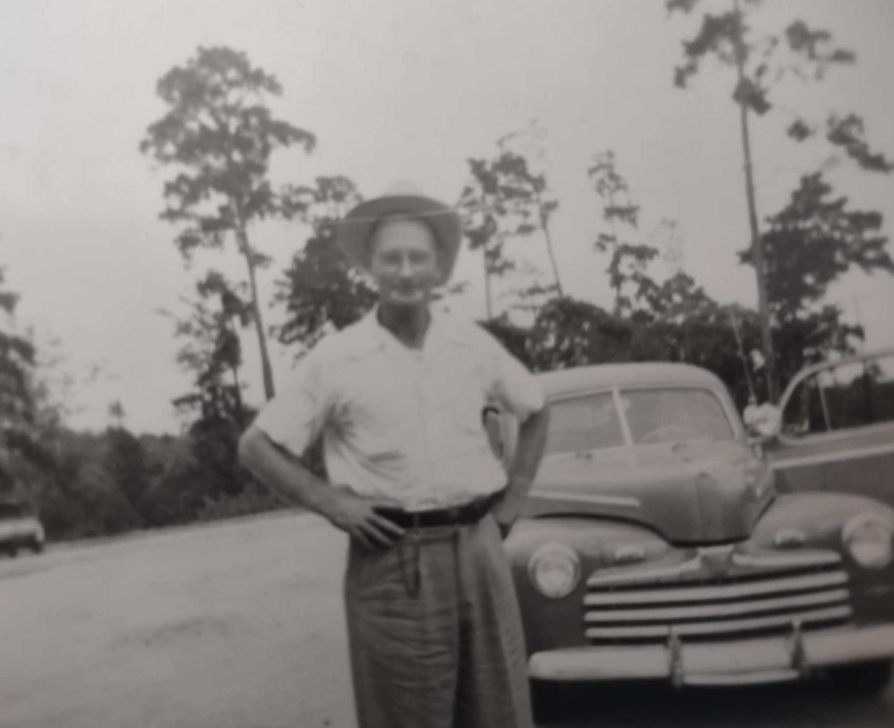
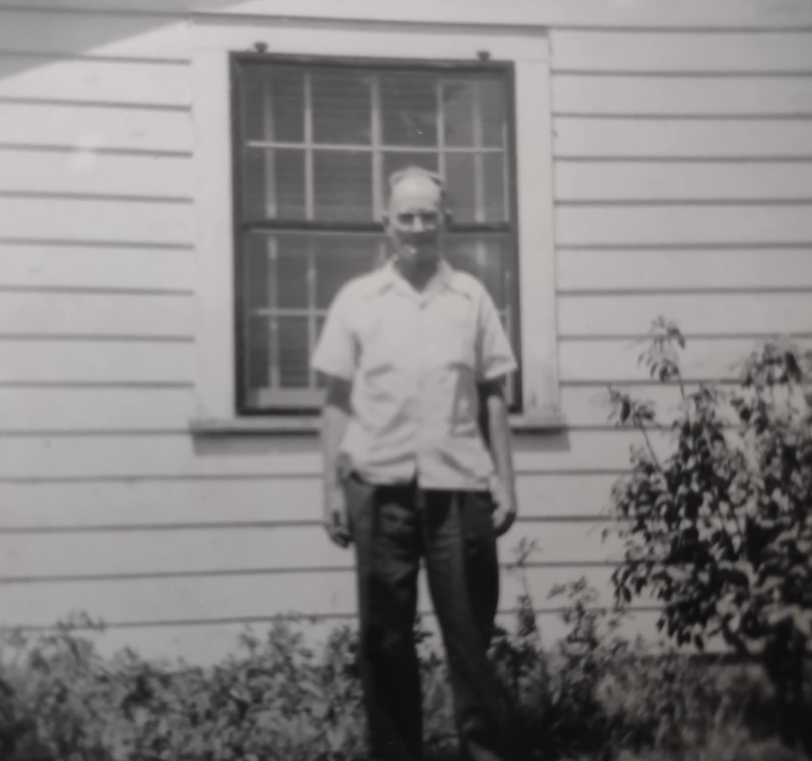
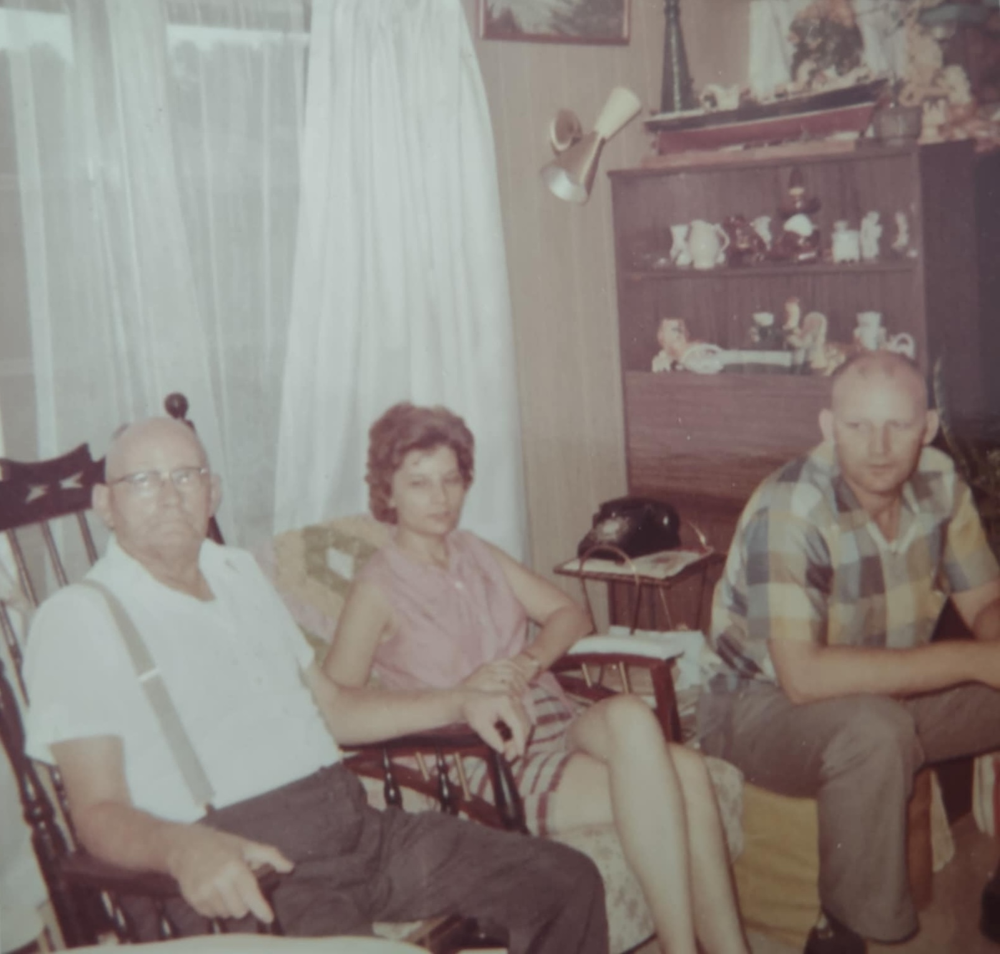
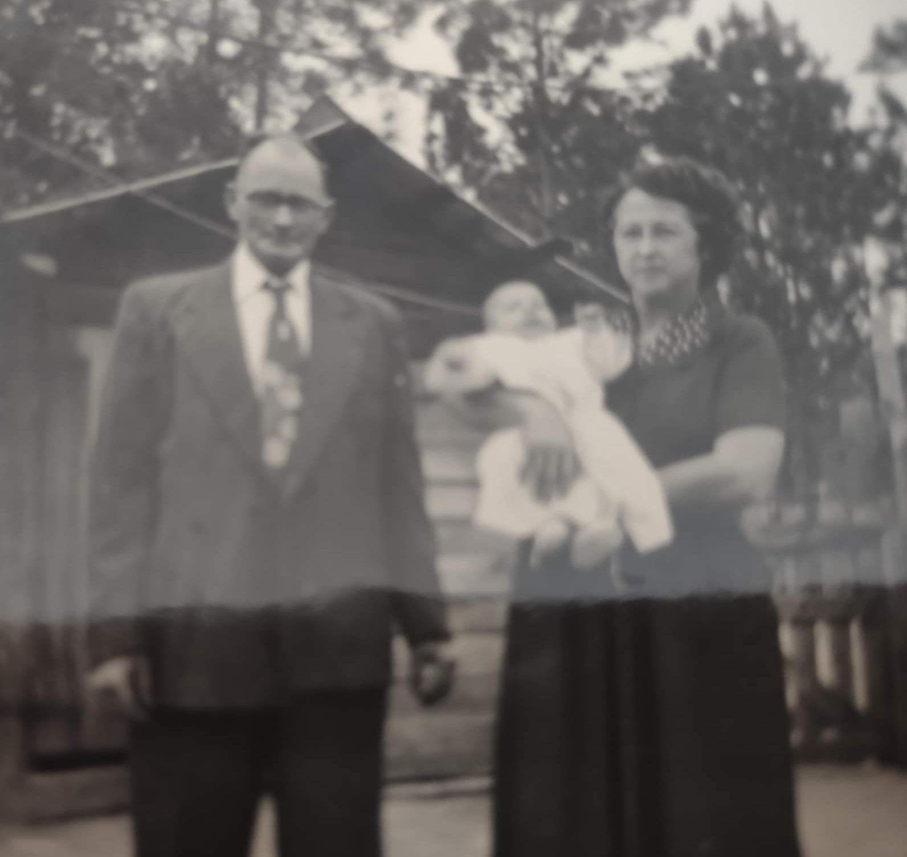
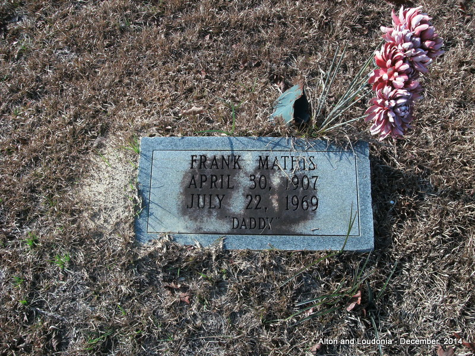

Frank Mathis
1907–1969
Life Events
Born: April 30, 1907
Died: July 22, 1969
Family
Father: Daniel M. Mathis
Mother: Mary Frances Darling
Siblings
Spouses:
Children
Military Service
No military service information has been added.
Biography
Frank Mathis was born April 30, 1907, in Madison County, Florida, the son of Daniel Mathis and Mary Frances Darling. He was a brother of Lela Mae Mathis.
Frank married his first wife, Mary Virginia Allen (1911–1933), on December 24, 1927, in Mayo, Lafayette County, Florida. The ceremony was performed by County Judge Moses H. Padgett. Because Mary was only 15 years old, her parents provided written consent for the marriage. Frank and Mary had two children, Joseph Henry Mathis (1930–2012) and Honorine Virginia Mathis (1932–2005), both born in Mayo, Florida. Mary died June 7, 1933, leaving Frank with two young children.
Frank later married Minnie Ola Redman. The couple lived in Sneads, Jackson County, Florida. Frank worked in a furniture mill before retiring and was a member of the Baptist Church of Sneads.
Frank died July 22, 1969, at Florida State Hospital in Chattahoochee, Gadsden County, Florida, at age 62. His obituary identified Minnie as his surviving wife, along with his two children and a stepson, John Wayne McQuaid.
He was buried at Mount Pleasant Cemetery in Chattahoochee, Gadsden County, Florida.
Photos




Grave & Burial

Mount Pleasant Cemetery, Chattahoochee, Gadsden County, Florida
Sources
-
1910 U.S. Census — Daniel Mathis Family
Type: CensusThe 1910 United States Census records Daniel Mathis and his wife Mary living in the Norton Creek area of Madison County, Florida, with their children. Their daughter Lela was recorded as seven years old and born in Florida. Her age is consistent with her September 26, 1902, birth date.
Location: Norton Creek, Madison County, Florida, United States
Household Members:
- Daniel Mathis — Head, age 37 (handwriting unclear; possibly 27
- Mary Mathis — Wife, age 28
- Claude Mathis — Son, age 10
- Lela Mathis — Daughter, age 7
- Rubin Mathis — Son, age 5
- Frank Mathis — Son, age 3
- Unnamed — Infant son, age 5/12 (5 months
Supports: Daniel Mathis and Mary Frances Darling as Lela Mathis's parents, Lela Mathis's residence in Madison County, Florida, in 1910, Lela Mathis's age of seven in 1910, The Mathis family household in 1910
-
1927 Marriage License and Certificate — Frank Mathis and Mary Virginia Allen
Type: Marriage RecordTwo-page Florida marriage record documenting the marriage of Frank Mathis and Mary Allen on December 24, 1927, in Lafayette County, Florida. The first page is the marriage license cover, while the second contains the marriage license and certification of the ceremony performed by County Judge Moses H. Padgett. The record was filed December 27, 1927, in Marriage Record F, page 243.
Location: Mayo, Lafayette County, Florida
Supports: Frank Mathis married Mary Virginia Allen on December 24, 1927, The marriage took place in Lafayette County, Florida, County Judge Moses H. Padgett performed the marriage ceremony, The marriage was recorded December 27, 1927
-
1927 Parental Consent for Marriage of Frank Mathis and Mary Allen
Type: Marriage RecordParental consent dated December 24, 1927, authorizing the marriage of Mary Allen, age 15, to Frank Mathis. The document identifies Mary's parents as R. H. Allen and Florence Allen and is witnessed by Lafayette County Judge Moses H. Padgett.
Location: Lafayette County, Florida
Supports: Mary Allen was 15 years old in December 1927, Mary Allen received parental consent to marry Frank Mathis, The parental consent was signed December 24, 1927
-
1969 Obituary — Frank Mathis
Type: ObituaryNewspaper obituary reporting the death of Frank Mathis, age 62. Identifies him as a native of Madison County, Florida, a retired furniture mill worker, and a member of the Baptist Church of Sneads. Survivors included his wife Minnie O. Mathis, daughter Hornine Barber, son Joseph Mathis, stepson John Wayne McQuaid, and three brothers. Newspaper title and publication date have not yet been established.
Location: Sneads, Jackson County, Florida
Supports: Frank Mathis was born in Madison County, Florida, Frank Mathis worked in a furniture mill, Frank Mathis lived in Sneads, Florida, Frank Mathis was married to Minnie O. Mathis, Frank Mathis had children and a stepson
-
1969 Florida Death Certificate — Frank Mathis
Type: Death CertificateFlorida death certificate, state file number 69-041363. Records Frank Mathis's birth on April 30, 1907, death on July 22, 1969, parents Daniel Mathis and Mary Dowling, residence in Sneads, Florida, and burial at Mount Pleasant Cemetery.
Location: Chattahoochee, Gadsden County, Florida
Supports: Frank Mathis was born April 30, 1907, Frank Mathis died July 22, 1969, Frank Mathis was the son of Daniel Mathis and Mary Dowling, Frank Mathis was buried at Mount Pleasant Cemetery